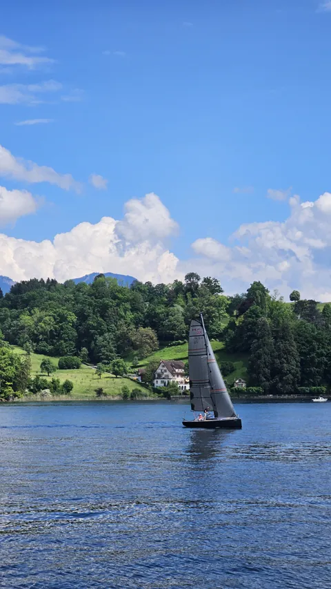
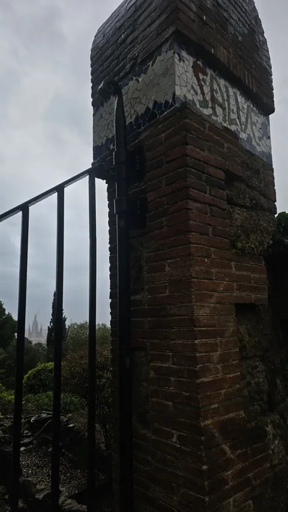

Publications
-
NeurIPS 2026
Explanation of Dynamic Physical Field Predictions using WassersteinGrad: Application to Autoregressive Weather Forecasting
@inproceedings{essafouri2026wassersteingrad, title = {Explanation of Dynamic Physical Field Predictions using WassersteinGrad: Application to Autoregressive Weather Forecasting}, author = {Essafouri, Younes and Raynaud, Laure and Drozda, Luciano and Risser, Laurent}, booktitle = {Advances in Neural Information Processing Systems}, year = {2026}, eprint = {2604.22580}, archivePrefix = {arXiv} } -
EGU 2026 · Poster
A Framework for Explainable AI in Weather Forecasting: Diagnosing Deep Learning Models via Gradient-Based Attributions
@inproceedings{essafouri2026framework, title = {A Framework for Explainable AI in Weather Forecasting: Diagnosing Deep Learning Models via Gradient-Based Attributions}, author = {Essafouri, Younes and Seznec, Corentin and Drozda, Luciano and Raynaud, Laure and Risser, Laurent}, booktitle = {EGU General Assembly 2026}, address = {Vienna, Austria}, note = {EGU26-4039}, doi = {10.5194/egusphere-egu26-4039}, year = {2026} } -
Talk · 2026
Explainable AI for Data-Driven Weather Forecasting
Currently
PhD researcher at the Institut de Mathématiques de Toulouse, 2025–2028. Before that: Grenoble INP – Ensimag, KTH Stockholm, Dassault Systèmes, Laboratoire Hubert Curien.
About, education, teachingElsewhere
Tétouan35.6° N 
Lucerne47.1° N Montreux46.4° N 
Barcelona41.4° N